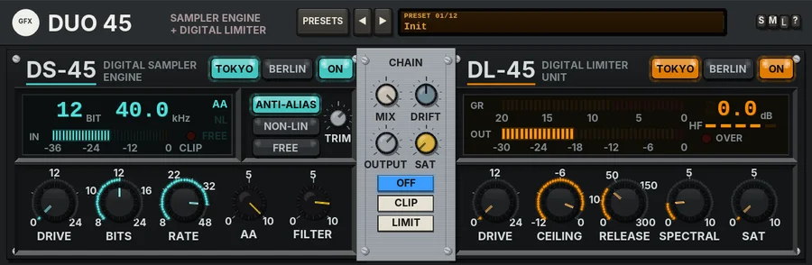

Duo 45
A 12-bit sampler engine and a data-reduction brickwall limiter bolted together: crunch, alias, clamp and squash, in two styles each.

Overview
Duo 45 is two half-rack units bolted side by side by a central bracket. The sampler on the left feeds the limiter on the right, always in that order.
The left unit is a sampler engine in the spirit of the late-80s 12-bit studio samplers: an input transformer, a steep anti-alias filter, a converter with reduced bit depth and sample rate, and a resonant analogue output filter that tracks the rate. The right unit is a limiter in the spirit of early consumer digital data-reduction: a digital clip, the high-frequency management of early perceptual coding (quiet high bands are dropped, the rest coarsely re-quantised), and a 2 ms lookahead brickwall limiter that never lets a sample past the CEILING.
Each unit has its own TOKYO / BERLIN key, which changes both its sound and its faceplate, so there are four units in all:
- DS-45 (TOKYO sampler): crisp and punchy - a light input transformer, rounded 12-bit steps, clean filters.
- ZA-45 (BERLIN sampler): darker - a heavier transformer (the lows saturate first, a softer top), a slightly noisier converter (hiss about -80 dBFS), coarser rounding with a dead zone round zero, a darker, driven output filter and more clock jitter.
- DL-45 (TOKYO limiter): glassy and precise - a soft digital clip, short 5.8 ms coding frames with smooth band changes and a light pump.
- BG-45 (BERLIN limiter): grittier - a hard digital clip, 11.6 ms frames with abrupt band switching, coarser band quantising, more emphasis in the detector and a deeper pump after every hit.
The TOKYO faces are charcoal with glowing displays; the BERLIN faces are baked enamel (cream-grey on the sampler, battleship grey on the limiter) and their labels are in German. The plug-in has 2 ms of latency (the limiter's lookahead), reported to REAPER and constant whether the units are on or off.
Reach for it for
- Classic 12-bit sampler crunch on drums and breaks
- Hip-hop and lo-fi grit, aliasing and 8-bit sounds
- Squashed, papery, "data-reduced" top end
- Hard brickwall limiting and pumping on a bus
- Broadcast-style loudness with a fixed ceiling
Controls
The header
- PRESETS
- Opens the full preset list.
- ◄ / ►
- Step to the previous or next preset (wrapping round).
- Preset display
- Shows the preset number and name. Click it for the preset list too.
- S / M / L
- Panel size: small, medium or large. The panel also scales to fit the plugin window.
- ?
- Opens a pop-up with the design credit, the GFX website address and the address of this manual. Click anywhere to close it.
Sampler unit (DS-45 / ZA-45)
On the BERLIN face the labels change to German; both names are given here.
- TOKYO / BERLIN
- The sampler's style and faceplate: DS-45 or ZA-45.
- ON / EIN
- Switches the sampler in or out, with a 10 ms fade (on by default).
- Display
- The bit depth (BIT) and sample rate (kHz) in use; the flags AA, NL and FREE (FREI) light when those keys are on; the IN (EIN) bar shows the level into the converter, -36 to 0 dBFS, and the CLIP lamp lights when it reaches full scale.
- ANTI-ALIAS
- Switches the anti-alias filter in front of the converter in or out (in by default). Out, everything above half the rate folds back as aliasing.
- NON-LIN / NICHTLIN.
- Non-linear (companded) quantising: finer steps for quiet sounds and coarser steps for loud ones, rather than even steps. Quiet tails stay cleaner; loud parts get grainier.
- FREE / FREI
- Normally BITS and RATE click into fixed steps. With FREE on, both run continuously; switching it off again moves them back onto the nearest steps.
- TRIM
- The sampler's output level, -24 to +12 dB (0 dB by default), before the limiter.
- DRIVE / EINGANG
- 0 to +24 dB into the input transformer (0 dB by default): the lows saturate the core first, then a gentle biased curve, then an analogue clipper into the converter's full scale.
- BITS
- The converter's bit depth, 8 to 24 (12 by default), in steps of 8, 10, 12, 16 and 24 (or anywhere with FREE).
- RATE / TAKT
- The converter's sample rate, 8 to 48 kHz (40 kHz by default), in steps of 8, 11.025, 16, 22.05, 26.04, 32, 40 and 48 kHz (or anywhere with FREE). Lower rates lose top end and alias. Each sample is taken at the exact clock instant.
- AA
- How tight the anti-alias filter is, 0 to 100% (100% by default): at 100% it sits just under half the rate, clean; lower settings let more aliasing fold back. It reads AA OFF while the ANTI-ALIAS key is off.
- FILTER
- The output filter, 0 to 100% (85% by default): a resonant 6-pole low-pass whose cutoff is a share of the rate (0% = 0.3 times, 100% = 1.05 times half the rate), so it follows RATE. The value shows the cutoff in kHz too. Lower settings give the dark, smooth sampler sound.
Limiter unit (DL-45 / BG-45)
- TOKYO / BERLIN
- The limiter's style and faceplate: DL-45 or BG-45.
- ON / EIN
- Switches the limiter in or out, with a 10 ms fade (on by default).
- Display
- The GR ladder (gain reduction, 0 to 20 dB), the OUT (AUS) peak ladder (-30 to 0 dBFS), the gain reduction in dB as digits, the OVER (ÜBERSTEUERT) lamp, which lights when the signal hits full scale on the way into the limiter, and five HF lamps: the high bands the coder keeps are lit, the ones it drops go dark.
- DRIVE / ANTRIEB
- 0 to +24 dB into the limiter (0 dB by default): the threshold sits that many dB under the CEILING, so more drive means more limiting and more loudness.
- CEILING / GRENZE
- The highest level any output sample can reach, -12 to 0 dBFS (-1 dBFS by default).
- RELEASE / RÜCKLAUF
- 0 to 300 ms (30 ms by default); 0 reads INSTANT (SOFORT). Short releases are loud and dense, long ones smoother but more pumping.
- SPECTRAL / SPEKTRAL
- The data reduction, 0 to 100% (15% by default). It raises a pre-emphasis (up to +9 dB above 4.5 kHz, +11 dB on BG-45) that the detector also hears, so pushed highs clamp harder, and it lowers the masking threshold so more high bands are dropped or coarsely quantised. Low settings add a slight papery top; high settings give the full swirling, data-reduced sound. At 0 the coder is off.
- SAT / SÄTTIG.
- Digital clipping ahead of the limiter, 0 to 100% (0 by default): soft on DL-45, hard on BG-45. It takes the peaks off before the limiter sees them, for more loudness and grit.
CHAIN (the central bracket)
- MIX
- Blends the processed signal with the dry input (delayed to match), 0 to 100% (100% by default).
- DRIFT
- Converter clock jitter, 0 to 100% (50% by default). See Drift below.
- OUTPUT
- The final level, -24 to +12 dB.
- SAT
- Band saturation on the way out: only the lows and highs are saturated (the mids stay clean), with a soft curve that loosens as the level rises. 0% by default.
- OFF / CLIP / LIMIT
- The house output stage: nothing (the default, since the limiter's CEILING is already a brickwall), a soft clipper, or a lookahead limiter (3 ms more latency, compensated by REAPER), both at -0.3 dBFS.
Drift
DRIFT is converter clock jitter. At 50% the sampling instant jitters at random by about 0.15% of a period (1.6 times more on ZA-45) and the clock wanders slowly by about 0.1%, and the output filter's cutoff drifts by about 1.5%. At 0% the clock is perfect.
Knobs: drag up or down (Shift for fine moves) or use the mouse wheel; double-click to reset a knob to its default. A knob's value replaces its name while you touch it.
Presets
Presets set both units and the CHAIN's MIX and DRIFT. OUTPUT, SAT and the output stage are left as they are. The list also has Reset all to defaults, which sets every control, those included, back to its starting value.
- Init
- DS-45 at 12 bits and 40 kHz into DL-45 with a -1 dBFS ceiling: a light sampler colour and gentle limiting.
- 12-Bit Drums
- 12 bits at 26.04 kHz, a little drive and a slightly looser anti-alias, into light limiting with some SAT.
- Hip-Hop Crunch
- 12-bit NON-LIN at 22.05 kHz with no anti-alias filter, into BG-45 with SAT 30%.
- 8-Bit Grit
- 8 bits at 16 kHz, no anti-alias filter.
- Tape-Fed Sampler
- ZA-45 driven +8 dB at 32 kHz with a darker filter, into a slow DL-45 release; DRIFT 70%.
- Berlin Dust
- ZA-45 at 10 bits NON-LIN and 22.05 kHz into BG-45: dark and dusty.
- Data Squash
- Sampler off; DL-45 with +10 dB of drive, a fast release and SPECTRAL 45%: the squashed data-reduced sound.
- Glassy Highs
- A clean 16-bit, 48 kHz sampler into DL-45 with SPECTRAL 85%: the swirly, data-reduced top end.
- Pump Bus
- A light 16-bit sampler into BG-45 with +9 dB of drive and a 120 ms release: a pumping bus.
- Broadcast Brick
- Sampler off; BG-45 with +8 dB, a 5 ms release and SAT 40%: hard and loud.
- Warsaw Lab
- ZA-45 with FREE at 10.5 bits and 19 kHz, driven hard, into BG-45; DRIFT 80%.
- Full Crush
- ZA-45 at 8 bits NON-LIN and 8 kHz with +16 dB of drive, into BG-45 with SPECTRAL 100% and SAT 80%.
Tips
- For classic sampler drums, keep BITS at 12 and try RATE at 26 or 32 kHz with FILTER around 70 - 85%.
- Turn ANTI-ALIAS off for metallic, ringing aliasing; leave it on for a cleaner, just-darker sound.
- The sampler's TRIM sets how hard it hits the limiter - use it, or the limiter's DRIVE, to choose how much limiting you get.
- Small amounts of SPECTRAL (10 - 25%) give a subtle, papery top; push past 60% for obvious artefacts.
- Use MIX for parallel crunch: 30 - 50% keeps the original punch with the grit on top.
- Switch either unit off with its ON / EIN key to use just the sampler or just the limiter.
File: gfx-duo-45.jsfx